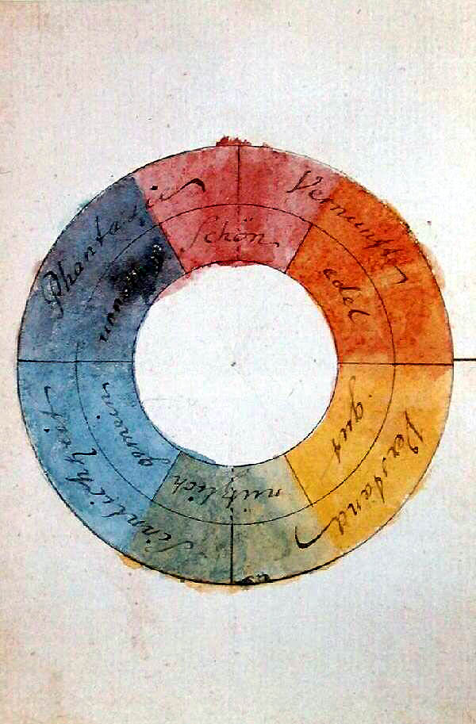

A Story of Color
Gaëtan Robillard, 2024.
Summary
- Five Moments in Color
- Searching for Color
- GenAI Color

Johann Wolfgang Goethe, Theory of color (Zür Farbenlehre), 1810.

J. W. Goethe, Ibid.
Michel-Eugène Chevreul, The principles of harmony and contrast of colours (De la loi du contraste simultané des couleurs), 1828.
Johannes Itten, Three-Dimensional Thinking (Dreidimensionales Denken), 1919-1920.

Josef Albers, Interaction of color, 1963.

Josef Albers, Homage to the square: apparition, 1959.
Frieder Nake, Matrix multiplication, 1967.

Frieder Nake, Matrix multiplication, (1967-68).

Étienne Robial, Researching an orange color for Les Inrockuptibles magazine, 2009.
Gaëtan Robillard, Three lines in a latent space, 2023.
Gaëtan Robillard, Three lines in a latent space, 2023.